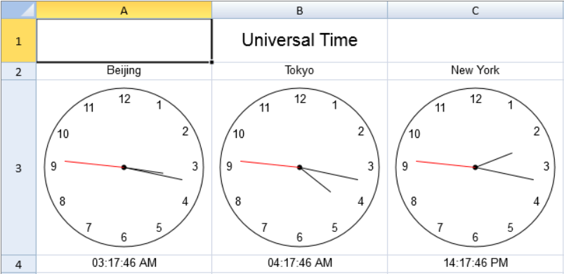

You can create a custom sparkline with SpreadJS.

Use the following steps to create a custom sparkline.
This example creates custom sparklines.
| JavaScript |
Copy Code
|
|---|---|
function Clock() { GC.Spread.Sheets.Sparklines.SparklineEx.call(this); } Clock.prototype = new GC.Spread.Sheets.Sparklines.SparklineEx(); Clock.prototype.createFunction = function () { var func = new GC.Spread.CalcEngine.Functions.Function("CLOCK", 1, 1); func.evaluate = function (args) { return args[0]; }; return func; }; Clock.prototype._drawCircle = function (context, centerX, centerY, radius) { context.beginPath(); context.arc(centerX, centerY, radius, 0, Math.PI * 2, true); context.stroke(); }; Clock.prototype._drawCenter = function (context, centerX, centerY, radius) { context.beginPath(); context.arc(centerX, centerY, radius, 0, Math.PI * 2, true); context.fill(); }; Clock.prototype._drawHand = function (context, centerX, centerY, loc, radius) { var angle = (Math.PI * 2) * (loc / 60) - Math.PI / 2; context.beginPath(); context.moveTo(centerX, centerY); context.lineTo(centerX + Math.cos(angle) * radius, centerY + Math.sin(angle) * radius); context.stroke(); }; Clock.prototype._drawHands = function (context, value, centerX, centerY, radius) { var date = value, hour = date.getHours(); hour = hour > 12 ? hour - 12 : hour; this._drawHand(context, centerX, centerY, hour * 5 + (date.getMinutes() / 60) * 5, radius / 2); this._drawHand(context, centerX, centerY, date.getMinutes(), radius * 3 / 4); context.strokeStyle = "red"; this._drawHand(context, centerX, centerY, date.getSeconds(), radius * 3 / 4); }; Clock.prototype._drawNumerals = function (context, centerX, centerY, radius) { var numerals = [1, 2, 3, 4, 5, 6, 7, 8, 9, 10, 11, 12], angle, numeralWidth; if (radius > 0) { numerals.forEach(function (numeral) { angle = Math.PI / 6 * (numeral - 3); numeralWidth = context.measureText(numeral).width; context.beginPath(); context.fillText(numeral, centerX + Math.cos(angle) * radius + numeralWidth / 2, centerY + Math.sin(angle) * radius + numeralWidth / 2); }); } }; Clock.prototype.paint = function (context, value, x, y, width, height) { if (!(value instanceof Date)) { return; } var centerX = x + width / 2, centerY = y + height / 2, margin = 10, padding = 10, radius = Math.min(width, height) / 2 - margin; if (radius <= 0) { return; } context.save(); //draw circle this._drawCircle(context, centerX, centerY, radius); //draw center this._drawCenter(context, centerX, centerY, 3); //draw hands this._drawHands(context, value, centerX, centerY, radius); //draw numerals this._drawNumerals(context, centerX, centerY, radius - padding); context.restore(); }; spread.addSparklineEx(new Clock()); var sheet = spread.getActiveSheet(); var style = new GC.Spread.Sheets.Style(); style.hAlign = GC.Spread.Sheets.HorizontalAlign.center; style.vAlign = GC.Spread.Sheets.VerticalAlign.center; sheet.setDefaultStyle(style); sheet.getCell(0, 1, GC.Spread.Sheets.SheetArea.viewport).value("Universal Time").font("20px Arial"); sheet.setValue(1, 0, "Beijing"); sheet.setValue(1, 1, "Tokyo"); sheet.setValue(1, 2, "New York"); sheet.setFormula(2, 0, '=CLOCK(A4)'); sheet.setFormula(2, 1, '=CLOCK(B4)'); sheet.setFormula(2, 2, '=CLOCK(C4)'); sheet.getRange(3, -1, 1, -1, GC.Spread.Sheets.SheetArea.viewport).formatter("hh:mm:ss tt"); sheet.setRowHeight(0, 50); sheet.setRowHeight(2, 200); sheet.setColumnWidth(0, 200); sheet.setColumnWidth(1, 200); sheet.setColumnWidth(2, 200); function updateTime() { var now = new Date(); var utcNow = new Date(now.getUTCFullYear(), now.getUTCMonth(), now.getUTCDate(), now.getUTCHours(), now.getUTCMinutes(), now.getUTCSeconds(), now.getUTCMilliseconds()); sheet.setValue(3, 0, new Date(utcNow.setHours(utcNow.getHours() + 8)));//+8 sheet.setValue(3, 1, new Date(utcNow.setHours(utcNow.getHours() + 1)));//+9 sheet.setValue(3, 2, new Date(utcNow.setHours(utcNow.getHours() - 14)));//-5 } setInterval(updateTime, 1000); updateTime(); |
|